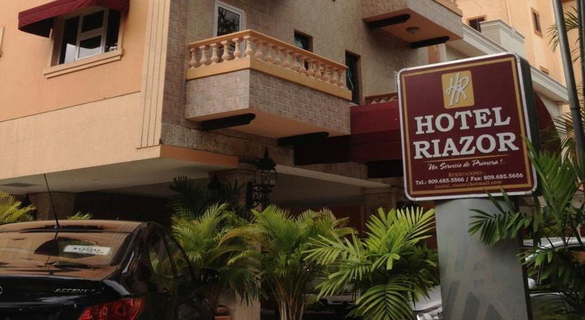
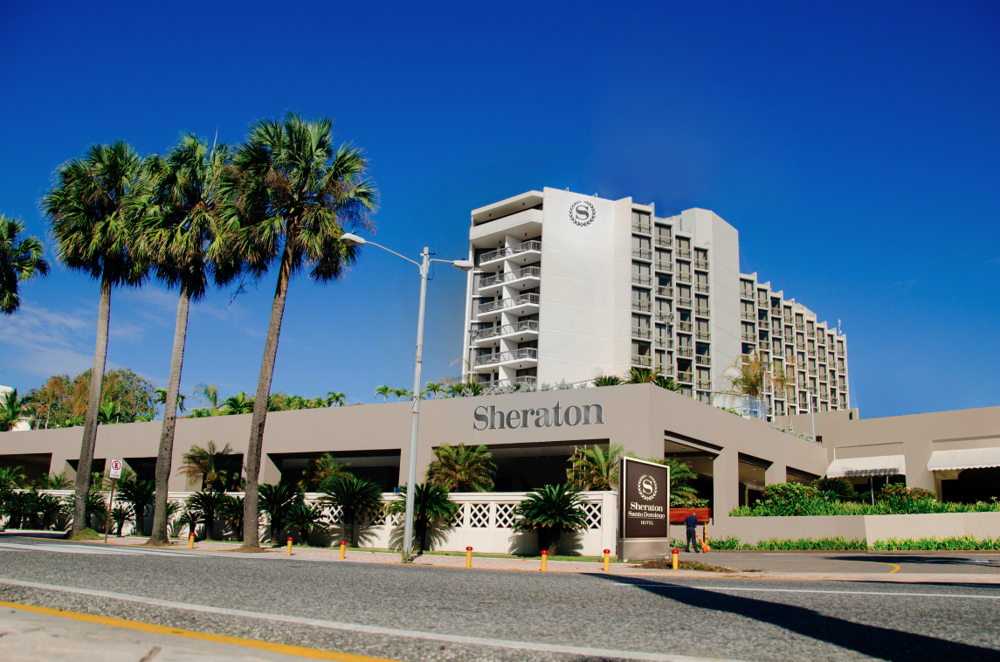

    <div class="pg hotels-page">
        <div class="uk-container uk-container-center">
            <div class="uk-width-small-1-1 uk-width-medium-4-5 uk-container-center">
                <h1 class="uk-text-center">Hotels</h1>
                <div class="pg-content">
                  <div class="hotel">
                    <a href="http://www.booking.com/hotel/do/riazor.en-gb.html?aid=357026;label=gog235jc-hotel-XX-do-riazor-unspec-do-com-L%3Aen-O%3Aunk-B%3Aunk-N%3Ayes-S%3Abo-U%3Asalo;sid=dd21c56ec2b1c23107d51bc3870ccd43;dcid=4;group_adults=2;no_rooms=1;sb_price_type=total;type=total&;selected_currency=USD;changed_currency=1" class="uk-float-left"></a>
                    <h2>Hotel Riazor</h2>
                    <a href="http://www.booking.com/hotel/do/riazor.en-gb.html?aid=357026;label=gog235jc-hotel-XX-do-riazor-unspec-do-com-L%3Aen-O%3Aunk-B%3Aunk-N%3Ayes-S%3Abo-U%3Asalo;sid=dd21c56ec2b1c23107d51bc3870ccd43;dcid=4;group_adults=2;no_rooms=1;sb_price_type=total;type=total&;selected_currency=USD;changed_currency=1"><h3><b>Rates:</b> from $70 to $89 a night</h3></a>

                    <p>Just a 2-minute walk from the Malecón seafront promenade and Güibia Beach, Hotel Riazor offers free private parking and a 24-hour restaurant. Each air-conditioned room has a flat-screen TV.</p>
                    <p>A full American breakfast is included in the price, and the hotel’s restaurant serves international cuisine. Room service is also available 24 hours a day.</p>
                    <br>
                    <p>Hotel Riazor is a 5-minute drive from the historic centre of Santo Domingo, while the modern city centre is a 10-minute drive away. Las Américas International Airport can be reached in 20 minutes by car.</p>

                    <a href="http://www.booking.com/hotel/do/riazor.en-gb.html?aid=357026;label=gog235jc-hotel-XX-do-riazor-unspec-do-com-L%3Aen-O%3Aunk-B%3Aunk-N%3Ayes-S%3Abo-U%3Asalo;sid=dd21c56ec2b1c23107d51bc3870ccd43;dcid=4;group_adults=2;no_rooms=1;sb_price_type=total;type=total&;selected_currency=USD;changed_currency=1" class="uk-button uk-button-large  button-primary">Book it now</a>
                  </div>
                    <div class="hotel">
                      <a href="http://www.marriott.com/hotels/hotel-rooms/sdqcy-courtyard-santo-domingo/" class="uk-float-right"></a>
                      <h2>Hotel Marriott Courtyard Santo Domingo</h2>
                      <a href="http://www.marriott.com/hotels/hotel-rooms/sdqcy-courtyard-santo-domingo/"><h3><b>Rates:</b> from $134 to $175 a night</h3></a>

                      <p>The Courtyard Santo Domingo, Dominican Republic hotel is located in the heart of the city's cultural district and offers comfortable accommodations and complete services for business and leisure travelers alike. Among the most preferred Santo Domingo hotels, the Courtyard is within walking distance to the National Theater and Palacio Bellas Artes Theater. </p>

                      <p>This is the closest hotel to the conference venue.</p>

                      <a href="http://www.marriott.com/hotels/hotel-rooms/sdqcy-courtyard-santo-domingo/" class="uk-button uk-button-large  button-primary">Book it now</a>

                    </div>
                      <div class="hotel">
                        <a href="http://www.sheratonsantodomingo.com/" class="uk-float-left"></a>
                        <h2>Sheraton Santo Domingo </h2>
                        <a href="http://www.sheratonsantodomingo.com/"><h3><b>Rates:</b> from $126 to $270 a night</h3></a>

                        <p>This hotel is set in the George Washington seafront, just 2 km from the historic Colonial City Centre. It features a swimming pool, a spa and a views of the Caribbean Sea.</p>

                        <p>The restaurant offers breakfast and lunch buffets, as well as à la carte dinner. Guests can also relax and listen to music in the lobby bar.</p>

                        <p>The Sheraton Santo Domingo is less than 10 km from the National Aquarium; The Columbus Lighthouse is less than 15 minutes' drive away and Las Americas International Airport is 30 minutes' drive away.</p>

                        <a href="http://www.sheratonsantodomingo.com/" class="uk-button uk-button-large  button-primary">Book it now</a>

                      </div>

                </div>
            </div>
        </div>
    </div>
